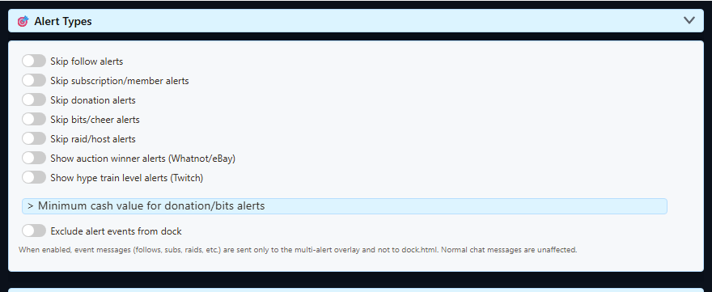
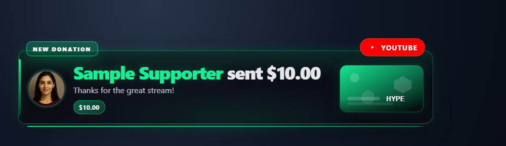

Start With The Event Source
Multi Alerts displays events that Social Stream has already captured. It does not sign in to Twitch, Kick, YouTube, TikTok, or another platform by itself.
- Connect and activate the platform source that provides the event.
- Keep that source page or standalone-app source window active.
- Use the same Social Stream session ID in the source, popup, Dock, and Multi Alerts URL.
- Test the alert overlay from its options before debugging the platform connection.
A successful preview proves the alert layout works. It does not prove the platform source has permission to receive that live event.
Multi Alerts Categories
| Category | Common Event Names | Notes |
|---|---|---|
| Follow | new_follower, follow, followed | Requires a source that captures follow events and the necessary platform permission. |
| Subscription | new_subscriber, resub, subscription_gift, membership aliases | Includes recurring, gifted, and membership-style events where supported. |
| Donation / gift | superchat, supersticker, gift, tip, donation aliases | A donation-style chat row may instead use hasDonation and donoValue. |
| Bits | cheer, bits | The amount can be filtered with the minimum donation/cash option. |
| Raid | raid, host, redirect | Availability and naming depend on the platform source. |
| Auction | auction_update | Auction-win alerts are opt-in. |
| Hype Train | hype_train | Hype Train alerts are opt-in and require eligible Twitch EventSub access. |
Viewer counts, follower totals, stream status, and ad-break status are updates rather than normal alert cards. Use the Event Reference when building an API consumer or custom overlay.
Major Platform Events
These are the current canonical event names when the selected source mode can deliver the activity.
| Activity | YouTube | Twitch | Kick |
|---|---|---|---|
| New member / subscriber | sponsorship |
new_subscriber |
new_subscriber |
| Renewal | resub |
resub |
resub |
| Gifted membership / subscription | giftpurchase, giftredemption |
subscription_gift |
subscription_gift |
| Paid support | superchat, supersticker, jeweldonation |
cheer, or a row with hasDonation |
donation for supported KICKs/tip events |
| Follow / public subscriber alert | new_follower; API-delayed and public subscriptions only |
new_follower |
new_follower |
| Channel reward | — | reward |
reward |
| Raid / host | — | raid |
Compatibility input only; not a current official Kick event subscription |
Kick raid note: Social Stream accepts a legacy raid/host-shaped payload for compatibility, but Kick's current official event catalog has no raid/host subscription. Do not make a Kick workflow depend on receiving one.
Standard Versus WebSocket Mode
| Platform | Standard Capture | WebSocket / API Capture |
|---|---|---|
| YouTube | Paid messages, memberships, membership gifts, viewer updates, and limited page-detected events. | The shared paid/member events plus member milestones, recent public-subscriber alerts, and supported count updates. |
| Twitch | Chat-rendered rewards, gifted-sub notices, viewer updates, and a few page-only notices. | EventSub adds followers, subscriptions, renewals, cheers, raids, rewards, and supported count/status events when the account and scopes permit them. |
| Kick | Chat plus lightweight page markers for gifts, rewards, and viewer updates. | Official follow, subscription, gift, reward-redemption, KICKs, moderation, and live-status events when authenticated. |
WebSocket mode is normally the right choice for event-driven alerts. Standard capture remains useful when only rendered chat is needed or authentication is unavailable.
Enable The Alert Types You Want
Open the Multi Alerts options from Social Stream settings. Follows, subscriptions, donations, bits, and raids have their own enable, style, sound, and appearance controls. Auction and Hype Train alerts require their dedicated opt-in controls.

- Use Queue alerts when several events may arrive together.
- Check source filters if events work in the Dock but not in Multi Alerts.
- Check minimum cash/donation filters when small tips or cheers are missing.
- Interact with the browser page once if custom alert audio is blocked by autoplay rules.
Preview Before Going Live
Use the preview controls to verify the selected category, text, amount, media, sound, animation, and queue behavior.

Which Fields Each Tool Uses
| Tool | Compatibility Rule |
|---|---|
| Multi Alerts | Classifies canonical event names, aliases, hasDonation, membership fields, and selected meta values into shared categories. |
| Event Flow | Match the exact type, event, and fields your source emits. Use the Test Message tool before relying on a live event. |
| TTS | Event rows are skipped by default unless they are donation-style. Add &readevents when non-donation event messages should be spoken, then apply normal TTS filters. |
| Tip Jar / Goal Meter | Normal mode uses donation amounts. Hype mode can also score membership, renewal, and gifted-membership fields. |
| Custom overlay / API consumer | Use the canonical payload fields from the Event Reference. Accept documented aliases only for backward compatibility. |
Use Create Test Messages to verify the expected event and Event Flow Recipes for working automation examples.
Platform Setup Notes
| Platform | First Check | Guide |
|---|---|---|
| Twitch | Sign in with the broadcaster or permitted moderator and keep EventSub connected. | Twitch EventSub setup |
| Kick | Choose the source mode deliberately and complete authentication when the desired official events require it; do not expect an official raid event. | Kick setup and authentication |
| Other sources | Confirm that the selected source actually emits the event type, not only chat messages. | Supported sites |
When A Real Alert Is Missing
- Confirm the source received the event in its own log, Dock, or API output.
- Confirm the source and Multi Alerts page use the same session ID and password.
- Confirm that category is enabled and not excluded by source or channel filters.
- Check minimum-value filters for donations and bits.
- For Twitch or Kick, sign in again if chat works but protected events do not.
- Keep the source window active long enough to observe a real event; a preview alone is not an end-to-end platform test.
If multiple devices or connection modes are involved, review Sessions, Passwords, and Relay Modes.